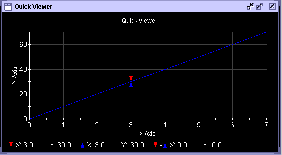

Point-by-Point
This menu item allows you to specify waveform data point-by-point using an editor from within the Signal Analyzer environment. This form of generating waveforms can be used for cases where the waveform cannot be described by an equation.
Selecting the Point-by-Point menu item will bring up an editor and open the file ".pt_x_pt_wavefile". You should first set the environment variable EDITOR shown as the following example.
export EDITOR=/usr/X11R6/bin/nedit
In this example, the Trace Editor is set to be the NEdit tool. You must restart SmarTest in order that this EDITOR variable takes effect.
Then you can specify a waveform by entering one point value after the other. Type spaces or returns to separate the values and continue until the desired waveform is described.
You need to save your input before you exit (File pull-down menu). The file will be saved to the /waveform subdirectory of the device. The input is not automatically stored when you exit the Point-by-Point editor, but if you do attempt to exit, you will get a dialog screen asking you if you wish to save your input first. Once you exit the Point-by-Point editor, the Waveform appears in a Data Display Panel of the Waveform Graphs Tool.

Functional changes
- Introduced before SmarTest 6.3.2